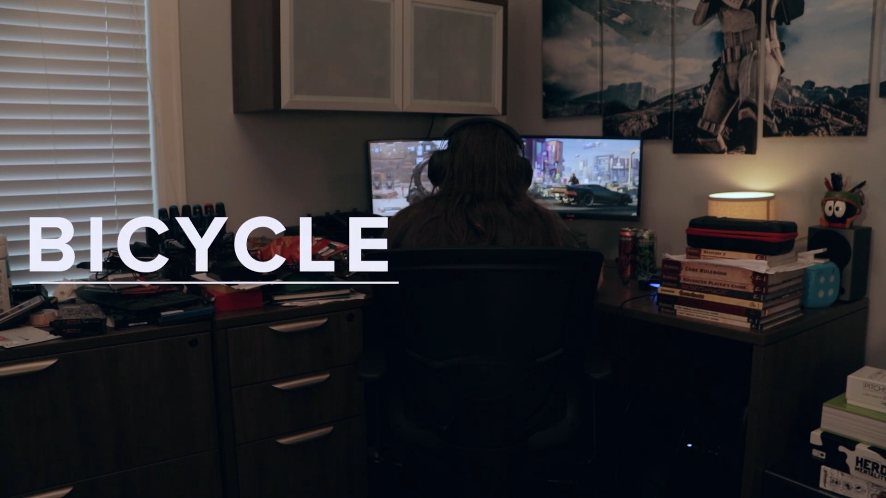
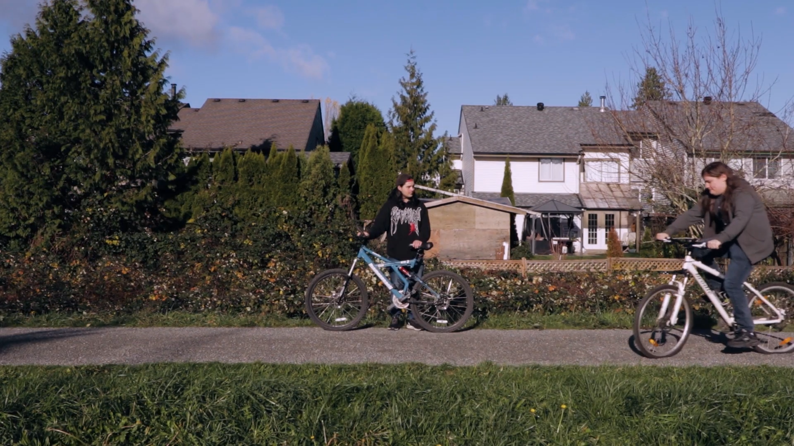

Bicycle

Bicycle
A short film about two teens becoming unlikely friends.
Overview
A film exploring how an introvert and an extrovert become friends through learning how to ride a bicycle.
Contributions
I was the editor for this film. This includes making all decisions for shot length, color grading, pacing etc. I was also involved in making the shot list and the sound design. I took on a directing role for some of the shoot days.
Behind the Scenes
Production Image

This film was created by a team of 4. We also had 2 additional actors.
Watch the Film!
6 min